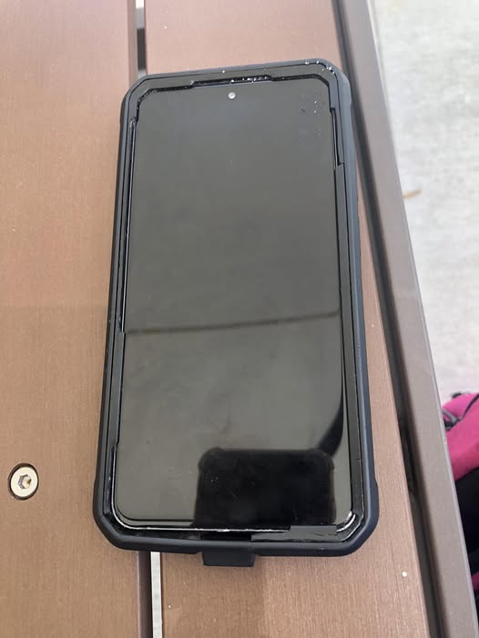
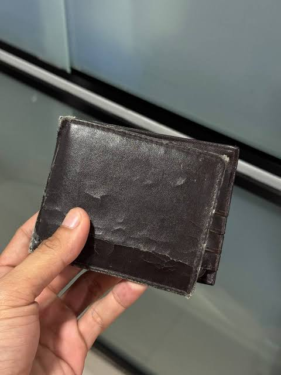
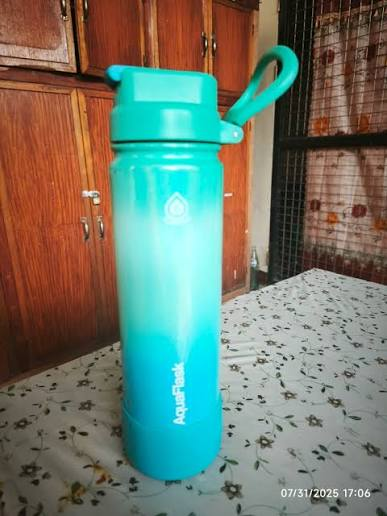
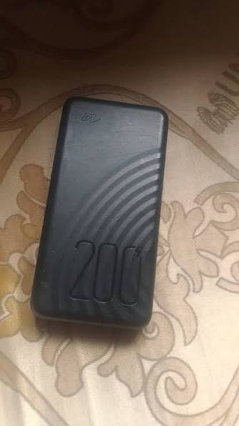
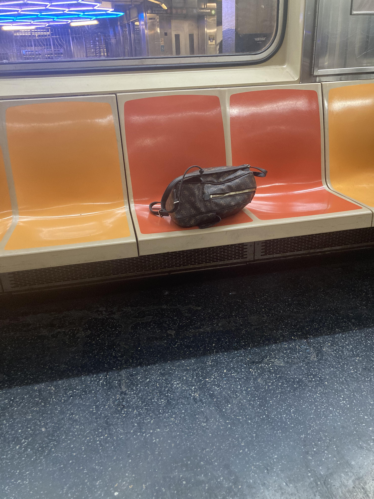

Report status
Track a report
Browse through our catalogue of lost items

Phone left in Jollibee Vito Cruz
855 Taft Avenue, cor P.Ocampo St., Malate, Manila, Metro Manila

Lost wallet found along Ocampo St.
1049 P.Ocampo St., Malate, Manila, 1004 Metro Manila

Aquaflask left in LRT Vito Cruz
Malate, Manila, 1004 Metro Manila

Missing powerbank left in Ribshack
HX8X+72F, Estrada St, San Andres Bukid, Manila, Metro Manila

Lost bag found in LRT
Malate, Manila, 1004 Metro Manila
Airpods left in D'Students Place
D'Student's Place, Taft Avenue, Malate Manila, Taft Ave, Malate, 1004 Metro Manila